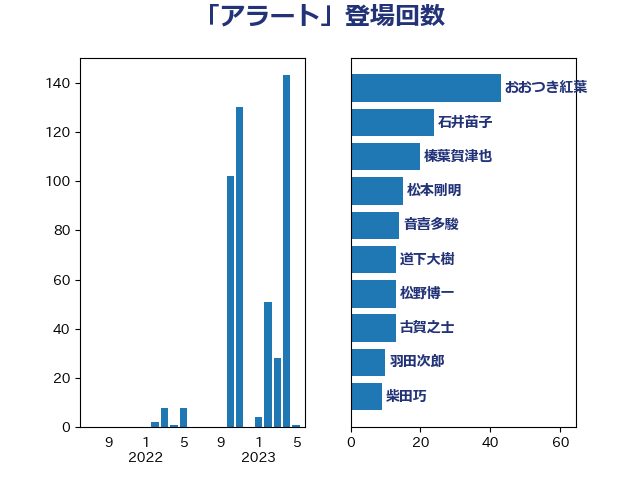

単語「アラート」

| おおつき紅葉 | 立憲民主党 | 43 回 |
| 石井苗子 | 日本維新の会 | 24 回 |
| 榛葉賀津也 | 国民民主党 | 20 回 |
| 松本剛明 | 自由民主党 | 15 回 |
| 音喜多駿 | 日本維新の会 | 14 回 |
| 道下大樹 | 立憲民主党 | 13 回 |
| 松野博一 | 自由民主党 | 13 回 |
| 古賀之士 | 立憲民主党 | 13 回 |
| 羽田次郎 | 立憲民主党 | 10 回 |
| 柴田巧 | 日本維新の会 | 9 回 |
| 磯崎仁彦 | 自由民主党 | 8 回 |
| 岩本剛人 | 自由民主党 | 8 回 |
| 藤巻健太 | 日本維新の会 | 7 回 |
| 木原誠二 | 自由民主党 | 7 回 |
| 西岡秀子 | 国民民主党 | 6 回 |
| 藤岡隆雄 | 立憲民主党 | 6 回 |
| 篠原豪 | 立憲民主党 | 6 回 |
| 岸田文雄 | 自由民主党 | 6 回 |
| 堀内詔子 | 自由民主党 | 6 回 |
| 福山哲郎 | 立憲民主党 | 5 回 |
| 渡辺周 | 立憲民主党 | 5 回 |
| 浅田均 | 日本維新の会 | 5 回 |
| 浅川義治 | 日本維新の会 | 5 回 |
| 森山浩行 | 立憲民主党 | 5 回 |
| 國場幸之助 | 自由民主党 | 5 回 |
| 吉田はるみ | 立憲民主党 | 5 回 |
| 高良鉄美 | 無所属 | 4 回 |
| 西村明宏 | 自由民主党 | 4 回 |
| 滝波宏文 | 自由民主党 | 4 回 |
| 浜田靖一 | 自由民主党 | 4 回 |
| 河西宏一 | 公明党 | 4 回 |
| 徳永久志 | 立憲民主党 | 4 回 |
| 寺田稔 | 自由民主党 | 4 回 |
| 塩川鉄也 | 日本共産党 | 4 回 |
| 坂本祐之輔 | 立憲民主党 | 4 回 |
| 伊東信久 | 日本維新の会 | 4 回 |
| 玄葉光一郎 | 立憲民主党 | 3 回 |
| 水野素子 | 立憲民主党 | 3 回 |
| 斎藤アレックス | 国民民主党 | 3 回 |
| 奥下剛光 | 日本維新の会 | 3 回 |
| 中谷一馬 | 立憲民主党 | 3 回 |
| 中川宏昌 | 公明党 | 3 回 |
| 青柳陽一郎 | 立憲民主党 | 2 回 |
| 階猛 | 立憲民主党 | 2 回 |
| 金子恭之 | 自由民主党 | 2 回 |
| 野田国義 | 立憲民主党 | 2 回 |
| 熊谷裕人 | 立憲民主党 | 2 回 |
| 池下卓 | 日本維新の会 | 2 回 |
| 杉尾秀哉 | 立憲民主党 | 2 回 |
| 木村次郎 | 自由民主党 | 2 回 |
| 平木大作 | 公明党 | 2 回 |
| 安江伸夫 | 公明党 | 2 回 |
| 中川貴元 | 自由民主党 | 2 回 |
| 高橋光男 | 公明党 | 1 回 |
| 馬場雄基 | 立憲民主党 | 1 回 |
| 阿部弘樹 | 日本維新の会 | 1 回 |
| 鈴木敦 | 国民民主党 | 1 回 |
| 金子道仁 | 日本維新の会 | 1 回 |
| 赤池誠章 | 自由民主党 | 1 回 |
| 谷公一 | 自由民主党 | 1 回 |
| 若林洋平 | 自由民主党 | 1 回 |
| 舟山康江 | 国民民主党 | 1 回 |
| 自見はなこ | 自由民主党 | 1 回 |
| 穂坂泰 | 自由民主党 | 1 回 |
| 石川大我 | 立憲民主党 | 1 回 |
| 田名部匡代 | 立憲民主党 | 1 回 |
| 牧山ひろえ | 立憲民主党 | 1 回 |
| 泉健太 | 立憲民主党 | 1 回 |
| 森田俊和 | 立憲民主党 | 1 回 |
| 梅村みずほ | 日本維新の会 | 1 回 |
| 朝日健太郎 | 自由民主党 | 1 回 |
| 岡田克也 | 立憲民主党 | 1 回 |
| 山口壯 | 自由民主党 | 1 回 |
| 宮本岳志 | 日本共産党 | 1 回 |
| 大島敦 | 立憲民主党 | 1 回 |
| 大塚拓 | 自由民主党 | 1 回 |
| 和田政宗 | 自由民主党 | 1 回 |
| 伊藤孝恵 | 国民民主党 | 1 回 |
| 今井絵理子 | 自由民主党 | 1 回 |
| 井野俊郎 | 自由民主党 | 1 回 |